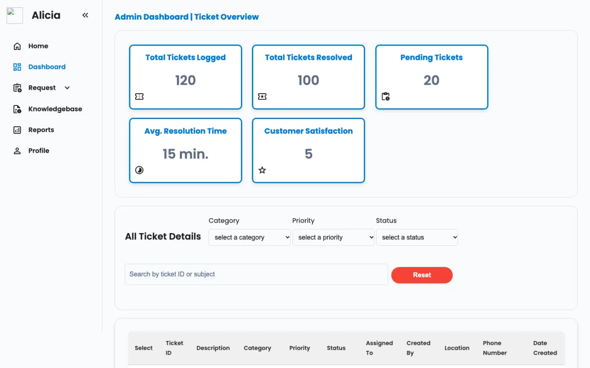

Alicia Helpdesk
Front-end prototype- The problem
- ICT and AV requests in medical education arrive by phone, email and in person, which makes them easy to lose and hard to measure.
- What I built
- A helpdesk where staff report issues and follow their ticket, plus an admin dashboard for ticket volume and resolution time, asset tracking, a knowledge base and reports.
- Built with
-
- HTML
- CSS
- JavaScript